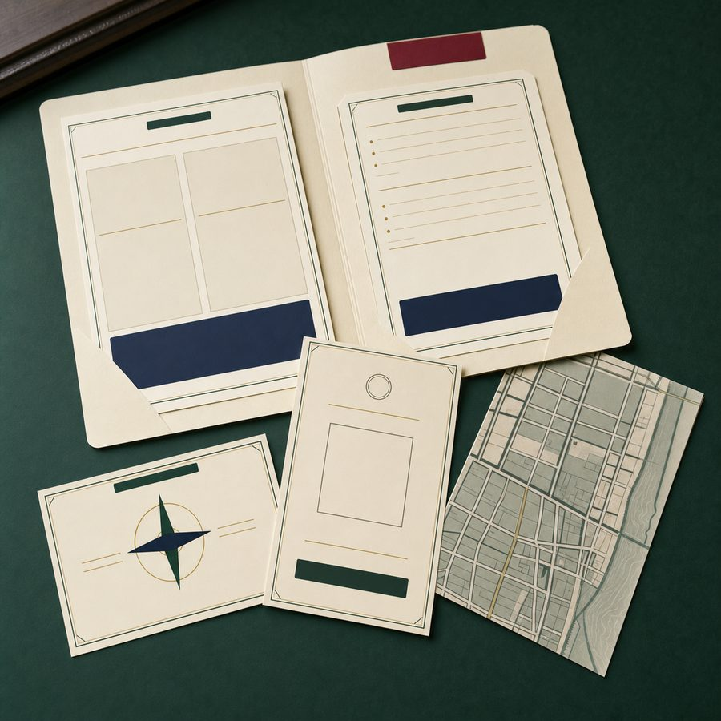

Change the operating system.
Redesign planning cadence, clarify decisions, surface dependencies, and help teams move through consequential change without losing the people doing the work.
Leadership storiesSenior Program & Innovation Leader
I turn promising ideas into aligned programs, tested prototypes, and products worth shipping, bringing inclusive leadership, enterprise delivery rigor, and confident facilitation to the room.
My best work happens where the path is not obvious yet: considering new ideas, getting the right people aligned, making something real enough to test, then carrying it through delivery.
Owned outcome: At PlayStation, I realigned planning from quarterly to monthly across 6+ teams; one prototype from an innovation program I produced reached production and cut cloud infrastructure costs 40%.
PMP-certified program leader, facilitator, civic builder, and product maker.
The PlayStation platform served 110M+ monthly active users, and my commerce work included the direct checkout flow supporting a 4.5M-unit PS5 launch quarter.
My through-line is building enough structure for people to do ambitious work together, whether the room holds six engineering teams, a contested public workshop, or a small crew shipping a new product.
Redesign planning cadence, clarify decisions, surface dependencies, and help teams move through consequential change without losing the people doing the work.
Leadership storiesHigh-stakes commerce, innovation programs, public approvals, grant-backed modernization, and coalition work with concrete outcomes.
Review the workLive civic products, a paid field mystery, and engagement systems that connect playful interaction to useful signal.
See what shippedFor St. Pete Detective Club, I owned the concept, custom platform, physical production, venue coordination, ticketing, promotion, and live hosting.

A concise, role-neutral view of my enterprise leadership, civic practice, and founder-mode delivery.
Civic engagement should feel like play, not homework.
That idea still guides Community Play Tools. Here, it sits in the right place: as one expression of my broader practice of helping people participate, decide, and build together.